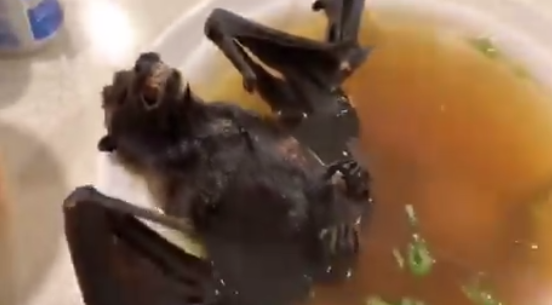

Sopa de murciélago pudo ser la causa del coronavirus en China
Los científicos siguen investigando los orígenes del coronavirus que ya cobró la vida de 17 personas en China.Investigadores de aquel país creen que el virus 2019-nCoV se originó en las serpientes, pero existen más explicaciones de su aparición en los pobladores.
De momento se sabe que el coronavirus surgió en la ciudad de Wuhan, exactamente en un mercado que cuenta con gran variedad de animales silvestres.Es común entre la población de China consumir manjares exóticos y la sopa de murciélago pudo ser la causa principal.
En redes sociales se han difundido imágenes y videos de personas que disfrutan de una sopa con un murciélago.Los científicos descubrieron que la causa del SARS en el 2000 se originó en estos animales, y no descartan que sean estos mismos los que desataron el coronavirus.
A diferencia de las bacterias, los virus difícilmente se destruyen a altas temperaturas, y las vísceras de los murciélagos podrían ser las portadoras del mismo.Sin embargo, el director del Centro para el Control y Prevención de Enfermedades de China, informó que no se conoce la fuente exacta.
Incluso existen teorías que podría ser la combinación de serpientes y murciélagos lo que provocó el avance del virus.Otros estudios apuntan a que el origen del coronavirus llegó desde el mar, con los pescados y mariscos que se venden en el mercado de Wuhan.
Posted On: 2020-01-23T18:56:00
Posted By: calaniz

Content Date: 2020-01-23
Download Date: 2021-05-13
Document ID: L0C04C7UA